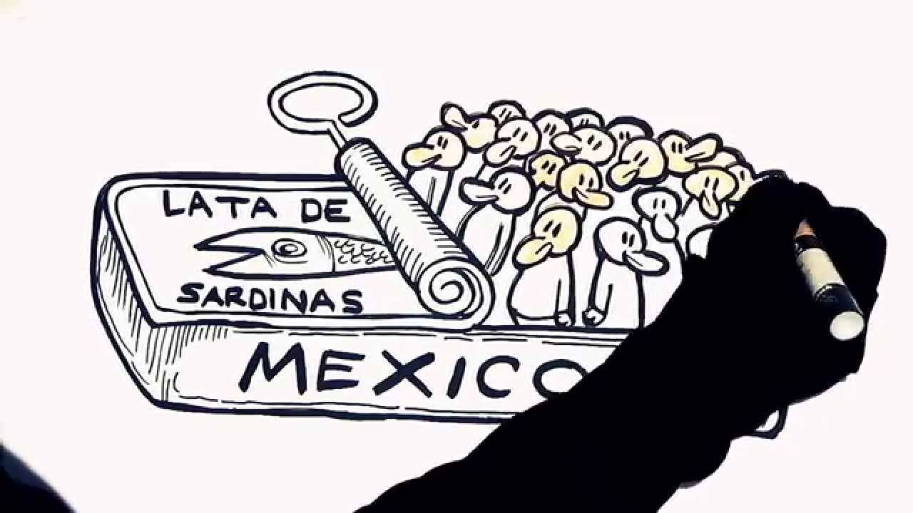

| La población de México es de 126 577 691 habitantes,2 la mayor entre los países de habla hispana, la segunda de América Latina tras la de Brasil y la décima en el mundo, al recientemente superar en población a Japón. A lo largo del siglo XX la población mexicana pasó de 13,6 a 97,5 millones de habitantes al crecer a tasas en torno al 3 % anual entre 1940 y 1980. Este ritmo de crecimiento, generalizado en los países en desarrollo en ese periodo, fue calificado de transición demográfica y motivó la adopción de una política de control de la natalidad a partir de los años setenta. Aunque esta tendencia se ha reducido y la tasa promedio de crecimiento anual de los últimos años ha sido menor al 1,50 %, la transición demográfica aún está en progreso, y México cuenta con una gran cohorte de jóvenes. La ciudad más poblada del país es la capital, la Ciudad de México, con una población de 8,7 millones de habitantes (2005), y el área metropolitana de la ciudad es la más poblada del país con 20 137 152 habitantes (2010). Aproximadamente el 50 % de la población vive en una de las 59 áreas metropolitanas de México.
El organismo encargado de elaborar los censos demográficos es el Instituto Nacional de Estadística y Geografía (INEGI). El Consejo Nacional de Población (CONAPO), dependiente de la Secretaría de Gobernación, es la institución encargada de analizar, evaluar y sistematizar información sobre los fenómenos demográficos. La Comisión Nacional para el Desarrollo de los Pueblos Indígenas (CDI), entre otras cosas, se encarga de la investigación y el análisis sociodemográfico y lingüístico de los pueblos indígenas de México.

Evolución demográfica
Evolución de la población de México durante el periodo 1700-2020.
En el siglo XVIII la población mexicana era de 3 a 4 millones de personas.
En el momento de independizarse, el país tenía cerca de 6 millones de habitantes, aunque se redujo a 5 millones tras las guerras de independencia (1808-1822). Esta se componía de un millón de blancos, 1.3 millón de mestizos, zambos y mulatos (castas) y 3.6 millones de indígenas.3
En 1825 tenía 6,8 millones de habitantes, unos 70 000 peninsulares, 1 200 000 criollos, 1 900 000 mestizos (o de castas), 3 700 000 indígenas y 10 000 negros.4
En 1838 tenía 7,8 millones de habitantes, incluyendo una gran colonia de norteamericanos en Texas, tras la independencia de ese estado la población cayó a 7 millones.
En 1846 al iniciarse la guerra con Estados Unidos el país tenía 7,5 millones de habitantes.
En 1858, al llegar a la presidencia Benito Juárez, el país tenía 8,3 millones de personas, aunque tras la guerra civil esta se redujo a 8,2 millones.
En 1862 la población era de 8,8 millones, tras la invasión francesa en 1868 era de 8,396 millones.
En 1872 al morir Juárez, la población era de 9 millones.
En 1876 año en que se inicia la presidencia de Porfirio Díaz, había 9,5 millones de mexicanos.
En 1900 eran 13,6 millones de habitantes.
En 1910, al inicio de la Revolución mexicana, el país tenía 15,2 millones de habitantes. Durante la guerra fueron muertas 2 millones5 y desplazadas un millón a los EE. UU. Para cuando esta terminó, el país tenía 14,3 millones de habitantes.
En 1929, con la Gran Depresión, el país tenía 15,6 millones de habitantes.
En 1940 había 22,6 millones de mexicanos.
En 1950 eran 39,7 millones.
En 1960 eran 50,5 millones.
En 1970 eran 63,2 millones.
En 1980 eran 75,8 millones.
En 1990 eran 90,6 millones.
En 2000 eran 101,5 millones.
En 2010 eran 117 millones.
En 2017 eran 123,1 millones.
|
|